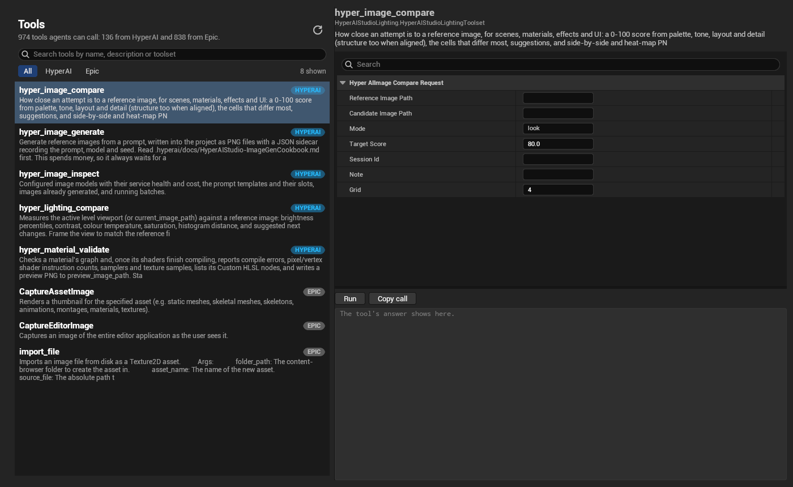

One endpoint, two tool sets.
Agents reach Unreal through unreal-mcp, Epic's Unreal MCP server inside the editor. Behind it are Epic's toolsets (scene, actors, assets, Blueprints and more, synced by Setup) and HyperAI's packs, published through Epic's Toolset Registry on the same endpoint. Preferences › Unreal MCP Tool Set chooses Unreal MCP + Extended Hyper Tools (the default) or Unreal MCP Only.
Agents call a tool with call_tool, naming its toolset and tool. They never need to discover tools first: .hyperai/docs/HyperAIStudio-ToolGuide.md lists every toolset, tool and field, and AGENTS.md has the fast paths.
call_tool toolset_name: "editor_toolset.toolsets.scene.SceneTools"
tool_name: "get_current_level"
arguments: {}How an edit happens.
Every pack that changes the project follows the same four steps, so an agent learns one pattern:
- Inspect.
hyper_*_inspectreads what is there now, with a revision to edit against. - Apply a plan.
hyper_*_apply_planwith a list of ops,bDryRun: falseand a freshoperationId. The plan is checked against the level as it will be at each step, sealed with a hash and journaled before anything changes. - Wait.
hyper_operation_waitfollows it through approval, the queue (another agent's edit runs first: statusqueued), the change itself and its checks. - Validate.
hyper_*_validateproves the result: a material compiles, a Blueprint has no errors, a slot holds its material.
Allow One-Shot Agent Edits (on by default) lets an agent apply a plan in one call without a separate dry run; the plan is still computed, sealed, journaled and undoable, and still waits for approval.
Nothing changes behind your back.
Edits wait for you
With Require Approval For Agent Edits on (the default), every agent edit waits in Activity until you approve it. Destructive and external-effect tools always ask. A supervised job approves only edits for its own packs.
One step each
An applied plan is one undo transaction: Ctrl+Z takes the whole plan back. Scripts roll back themselves when they fail.
Never twice
Each operationId is journaled, so a retried call replays its result instead of applying again. When the journal is full, the oldest settled record makes room; unresolved ones are never dropped.
Sandbox Mode
While it is on, everything saved in the editor, agents' edits and your own, lands in a UE File Sandbox until you approve or discard all of it in Activity. Agents cannot approve or discard.
A cap on paid calls
Image models and other paid services show their price before they run, and a per-session spend cap refuses any call that would pass it.
Never stored
Services name the environment variable their key is in. Memory refuses anything shaped like a key; task history strips them.
The 39 packs.
core packs work in every project. optional packs appear when the Unreal plugin they need is enabled; hyper_capability_report and the Tools page show which are live.
| Pack | What agents do with it | Tools | |
|---|---|---|---|
shared_foundation | core | Plans and operations for every pack, capability report, project memory, sandbox status, batched reads. | 10 |
context_scene_project_search | core | Editor context snapshots, scene inspect and edits, project-wide search. | 6 |
blueprint | core | Snapshot, discover nodes, patch, build in batches, compile, debug, repair, diff and lay out Blueprints. | 10 |
diagnostics | core | Diagnose problems, audit the project, asset dependency graphs, the editor log. | 4 |
pie_runtime | core | The playtest bot, PIE queries, verify many cases at once. | 5 |
worldbuilding_navigation | core | World Partition, landscape and navigation: inspect, change, validate. | 6 |
networking_game_framework | core | Replication and the game framework (modes, states, controllers). | 6 |
materials_dynamic_material | core | Material graphs and instances, and Material Designer materials. | 6 |
data_config_localization | core | Data tables and assets, config, localization. | 3 |
automation_profiling_build | core | Automation tests, profiling captures, build diagnosis. | 5 |
source_control | core | What agents checked out, locked or added, and submitting it (Unreal's provider, or Lore) once you approve. | 2 |
editor_lifecycle | core | Restart the editor, build, and resume the chat. | 1 |
lighting_lookdev | optional | Sun, sky, point, spot and rect lights, fog, exposure, post process and Blueprint skies; captures; image compare. | 5 |
level_design | optional | Blockouts and layout. | 3 |
enhanced_input | optional | Input actions and mapping contexts. | 3 |
gameplay_ai | optional | Behavior trees, blackboards and State Trees. | 3 |
gas | optional | Gameplay Ability System: abilities, effects, attributes. | 3 |
animation_rigging | optional | Animation assets and rigging. | 3 |
blueprint_structure | optional | What Epic’s Blueprint tools leave out: timelines with their tracks and keys, Blueprint Interfaces made and implemented, RPC events and replication conditions, nodes folded into functions, macros or collapsed graphs and back, and user-defined structs and enums with their fields, defaults and values; each plan one undo step, compiled and reported. | 2 |
anim_blueprint | optional | Animation Blueprint graphs and state machines. | 3 |
uaf_graph | optional | Unreal Animation Framework graphs. | 3 |
character | optional | MetaHuman characters. | 3 |
audio_metasound | optional | MetaSounds and audio. | 3 |
niagara_vfx | optional | Niagara systems: emitters, modules, HLSL modules, GPU simulation stages, emitter and renderer settings, stack fixes; a System with compile errors still takes the plan that repairs it. | 3 |
texture_graph | optional | Texture Graph assets. | 3 |
mesh_terrain | optional | Mesh terrain with Mesh Partition. | 3 |
pcg | optional | PCG graphs. | 3 |
ui_slate_mvvm | optional | Widget Blueprints built in one undoable plan: the widget tree, text, styles, layout, gamepad navigation and animations; MVVM view models. | 3 |
cinematics | optional | Sequencer and Movie Render Pipeline. | 3 |
physics_chaos | optional | Physics assets and Chaos. | 3 |
geometry_interchange | optional | Geometry Scripting and Interchange imports. | 6 |
live_production | optional | Live Link and remote control. | 3 |
gameplay_systems | optional | Mass entities, Game Features and world conditions. | 3 |
paper2d | optional | Paper2D sprites and flipbooks. | 3 |
actor_modifier_property_animation | optional | Actor modifiers and property animators. | 6 |
image_generation | optional | Generate reference images, or change a picture, such as the level’s own view relit; list the models. | 2 |
sound_design | optional | Sound effects, ambiance loops and music built with Decibel: sessions of synths, samplers playing notes from your sound libraries, effects on shared reverb returns, automation lanes, MIDI clips and layers of library sounds, rendered into a SoundWave, stems and a MetaSound Source, seamless loops included, with their levels measured. Only where the Decibel plugin is enabled. | 3 |
mesh_generation | optional | Make a textured 3D model with Tripo, Meshy or Hi3D, from words or a picture, and import it as a static mesh with its materials; always approved first, at a price shown. | 2 |
scripting | optional | Editor Python in one undo step, when you allow it. | 1 |
The Tools page.
Every tool an agent can call, Epic's and HyperAI's, is on the Tools page as a form you can run yourself: pick a toolset and tool, fill the fields, run it, and read the result as a report or as JSON. It is also the quickest way to see exactly what a tool expects.

Extra MCP servers.
Under Settings › MCP servers, add community or company MCP servers beside Unreal's: an HTTP endpoint or a command. HyperAI writes them into the configs of the agents you use; the agent launches and talks to them itself. Test runs a harmless initialize and tools/list for HTTP servers, or checks a command is on PATH. Share a server as a hyperai-mcp.json profile: HyperAIStudio.ImportMCPProfileFromFile or …FromClipboard brings one in, disabled until you turn it on, and secret values are never imported.
Python scripts.
Off by default. Allow Agents To Run Python Scripts adds hyper_script_run: editor Python inside one undo step that rolls back if the script fails or runs out of time. A script that imports system modules, deletes, renames, loads levels or writes files waits for your approval instead. Restart the editor after changing it.
Material Authoring Mode decides how agents build materials: Hybrid (the default) uses graph nodes and a Custom HLSL node only for math nodes cannot express, each with a stated reason; Nodes forbids Custom HLSL; Hlsl allows it freely.